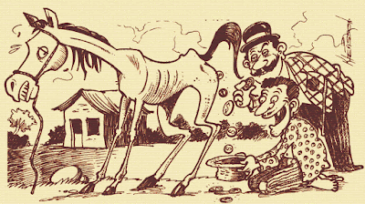

Introdução
Nascido em João Pessoa, Ariano Suassuna cresceu em Taperoá, no sertão paraibano, onde tem contato direto com o teatro, conto e a cultura popular do Nordeste. É a partir dessa vivência que o autor irá escrever a maior parte de suas obras.
O Auto da Compadecida foi escrito baseado em três folhetos da literatura de cordel. Para o pesquisador e poeta cordelista Marco Haurélio, “ele conseguiu fazer uma síntese perfeita, que de tão boa você não consegue ver que são textos que, a princípio, não dialogam”.
O primeiro ato começa a partir da história de Leandro Gomes de Barros, O Dinheiro ou O Testamento do Cachorro.
Ato 1
“Porque o dinheiro na terra
É capa que tudo encobre
Cubra um cachorro com ouro
Que ele tem que ficar nobre
É superior ao dono
Se acaso o dono for pobre
Eu já vi narrar um fato
Que fiquei admirado
Um sertanejo me disse
Que nesse século passado
Viu enterrar um cachorro
Com honras de potentado
Um inglês tinha um cachorro
De grande estimação
Morreu o dito cachorro
E o inglês disse então:
— Mim enterra esse cachorro
Inda que gaste um milhão
(…)
Ele antes de morrer
Um testamento aprontou
Só quatro contos de réis
Para o vigário deixou
Antes de o inglês findar
O vigário suspirou
— Coitado! — disse o vigário,
De que morreu esse pobre?
Que animal inteligente!
Que sentimento mais nobre!
Antes de partir do mundo
Fez-me presente do cobre”
-Trecho de O Dinheiro ou O Testamento do Cachorro
Ato 2
“Se vendo o compadre pobre
Naquela vida privada
Foi trabalhar nuns engenhos
Longe de sua morada
Na volta trouxe um cavalo
Que não servida pra nada
Disse o pobre à mulher:
— Como havemos de passar?
O cavalo é magro e velho
Não pode mais trabalhar
Vamos inventar um quengo
Pra ver se o querem comprar
Foi na venda e de lá trouxe
Três moedas de cruzado
Sem dizer nada a ninguém
Para não ser censurado

No fiofó do cavalo
Foi o dinheiro guardado
Do fiofó do cavalo
Ele fez um mealheiro
Saiu dizendo: — Sou rico
Inda mais que um fazendeiro
Porque possuo um cavalo
Que só defeca dinheiro”
-Trecho de História do Cavalo que Defecava Dinheiro
Ato 3
“Vamos todos nós embora
Que o causo não é o primeiro,
E o pior é que também
Não será o derradeiro…
Home que a mulher domina
Não pode ser justiceiro.

(…)
Valha-me Nossa Senhora,
Mãe de Deus de Nazaré!
A vaca mansa dá leite,
A braba dá quando quer:
A mansa dá sossegada,
A braba levanta o pé…
Já fui barco, fui navio
E hoje sou escaler…
Já fui linha de meada,
Hoje sou de carreté…
Já fui menino, sou homem,
Só me falta ser mulher…
Valha-me Nossa Senhora,
Mãe de Deus de Nazaré!”
-Trecho de O Castigo da Soberba